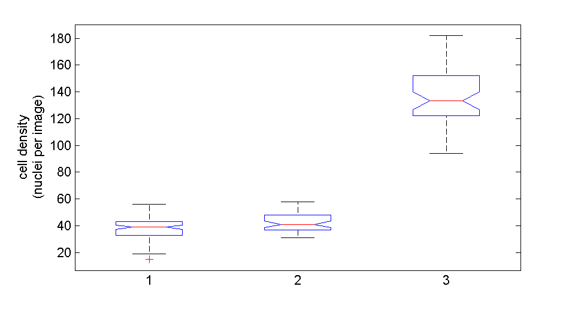

cpGrowthCurve
Contents
Inputs
- data, a required variable. data is a cell array containing time series data. In each position of the cell array resides a column vector. There is a row for each image in the column vector and the number in each row represents the number of cells segmented in that image.
- outpath, the directory where image files will be saved. By default this is the user's home in the MATLAB® path.
Outputs
- figh, a struct containing the figure handles for each plot created by this function. This output is useful for tweaking these plots after the function call.
function [figh] = cpGrowthCurve(data,varargin)
Parse input
The inputs into the function are parsed. If there were no inputs when the function was called a set of demonstrative data is imported and processed; this is useful and necessary for MATLAB-publishing this file.
if nargin == 0 data = loadDemoData('cpGrowthCurve'); end defaultOutpath = userpath; p = inputParser; addRequired(p,'data',@iscell); addParamValue(p,'outpath',defaultOutpath,@isdir); parse(p,data,varargin{:}); if nargin == 0 [mfilepath,~,~] = fileparts(mfilename('fullpath')); %finds the path to this script outpath = fullfile(mfilepath,'html'); else outpath = p.Results.outpath; end if ~isdir(outpath) mkdir(outpath); end
boxplot
numImages = cellfun(@length,data); maxNumImages = max(numImages); myBoxPlotData = NaN(maxNumImages,length(data)); for i = 1:length(data) myBoxPlotData(1:numImages(i),i) = data{i}; end boxplot(myBoxPlotData,'notch','on'); figh.boxplot = gcf; str = sprintf('cell density\n(nuclei per image)'); ylabel(str); set(figh.boxplot,'PaperSize',[7 4]); set(figh.boxplot,'PaperUnits','inches','PaperPosition',[0 0 6.4 3.6]); rez=150; %resolution (dpi) of final graphic print(figh.boxplot,fullfile(outpath,'cpGrowthCurve_boxplot.png'),'-dpng',['-r',num2str(rez)],'-opengl'); %save file print(figh.boxplot,fullfile(outpath,'cpGrowthCurve_boxplot.pdf'),'-dpdf');

meancelldensity = cellfun(@mean,data)./cellfun(@length,data);
ans =
boxplot: 173.0024
